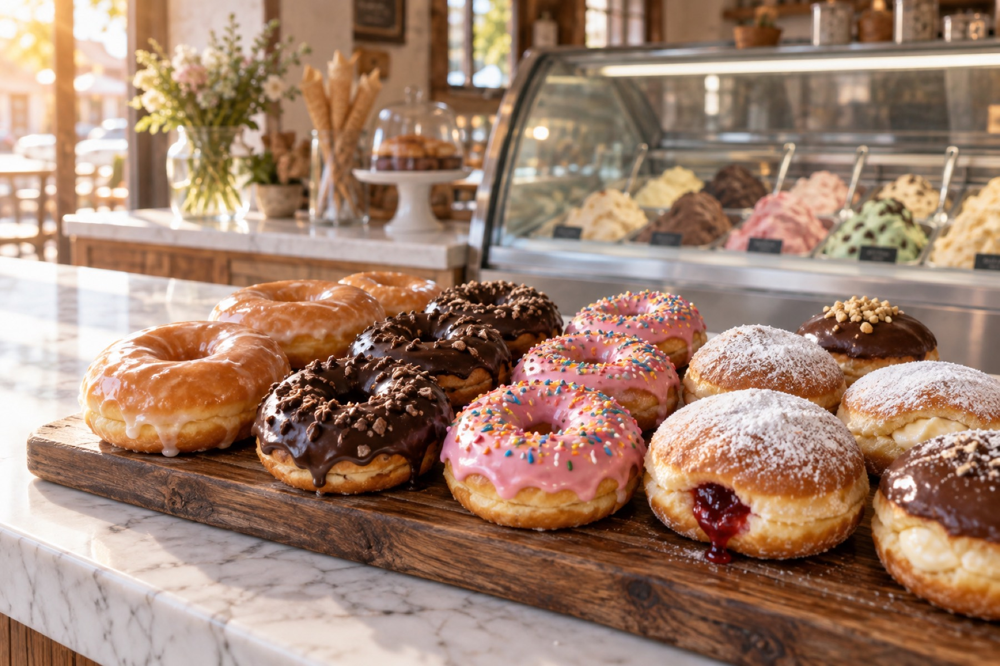

Hand-cut donuts & homemade ice cream · San Mateo
Cruel Donuts is a woman-owned San Mateo donut shop rooted in decades of donut-making. Fresh donuts are hand-cut and prepared on site every morning, the ice cream is made in-house with Asian-inspired flavors, and there are now two shops: the original on Laurie Meadows and the new one on 25th Avenue.
We continue to hand-cut and prepare fresh donuts on site: raised, cake and old fashioned donuts, French crullers, the creme brulee donut, and mochi donuts on weekends.
Our in-house ice cream crafter, Ray Lai, makes small batches with flavors like ube macapuno, black sesame with brittle, Chinese almond cookie and Vietnamese coffee, plus dairy-free options like coconut pandan.
My family began making donuts in 1982 in Yucca Valley, Southern California, with a small shop called The Jelly Donut, still open today. From there, we brought our craft to Northern California.
Our story
Cruel Donuts is a woman-owned business rooted in decades of donut-making experience. Owner Lean Ma is the daughter of Cambodian immigrants who fled the country in the 1970s; her family began making donuts in 1982 in Yucca Valley with a small shop called The Jelly Donut, which is still open today.
She and her husband opened a shop in San Mateo in 2022, closer to home, closer to their children, in the Laurie Meadows neighborhood. After three successful years there, Cruel Donuts opened a second location on 25th Avenue in the summer of 2025. Now, her own children work in the business part-time.
The name is a nod to French crullers, though as in-house ice cream crafter Ray Lai likes to say, the flavors are so good, it's cruel.
Two shops
The original shop on Laurie Meadows Drive opens early and sells through by early afternoon. The new 25th Avenue shop stays open into the evening with the full ice cream counter and long wooden bench seating.
Reviews
“I love donuts. More specifically, I love Cruel Donuts. I was thrilled when I learned they were opening this new location. All the varieties I've tried have been great, but do NOT miss the cruellers!”
“Delicious!! Enjoyed their ube coconut ice cream and maple donut. We came near closing so we'll be back to try their speciality donuts and other ice cream flavors!”
“Lots of variety for vegan, dairy intolerant, and gluten-free folks! The best popsicle I have ever had, made from tea and lightly sweetened.”
“Some of the best ice cream in the Bay Area.”
Hours & location
| Monday | 7:15 am – 8:00 pm |
|---|---|
| Tuesday | 7:15 am – 8:00 pm |
| Wednesday | 7:15 am – 8:00 pm |
| Thursday | 7:15 am – 8:00 pm |
| Friday | 7:15 am – 8:00 pm |
| Saturday | 7:15 am – 9:00 pm |
| Sunday | 7:15 am – 5:00 pm |
In San Mateo's 25th Avenue district, with the pink brick storefront. The original shop at 35 Laurie Meadows Dr is open 6 am to 2 pm daily, (650) 315-2460.
Email crueldonuts@gmail.com for a dozen or a special order, or just come in early, before the creme brulee donuts are gone.
Email an order